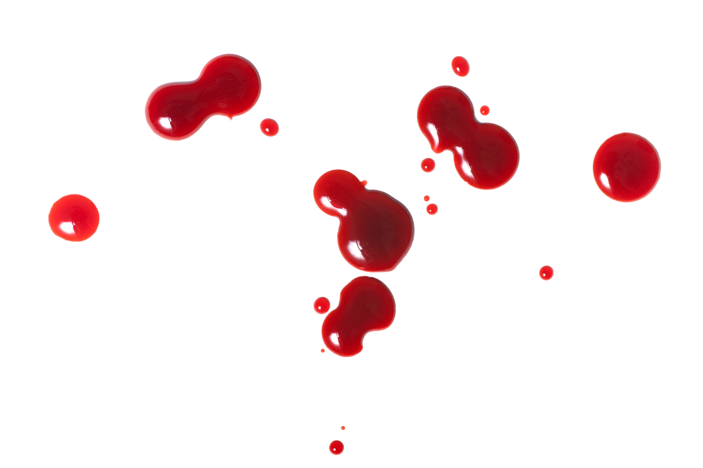
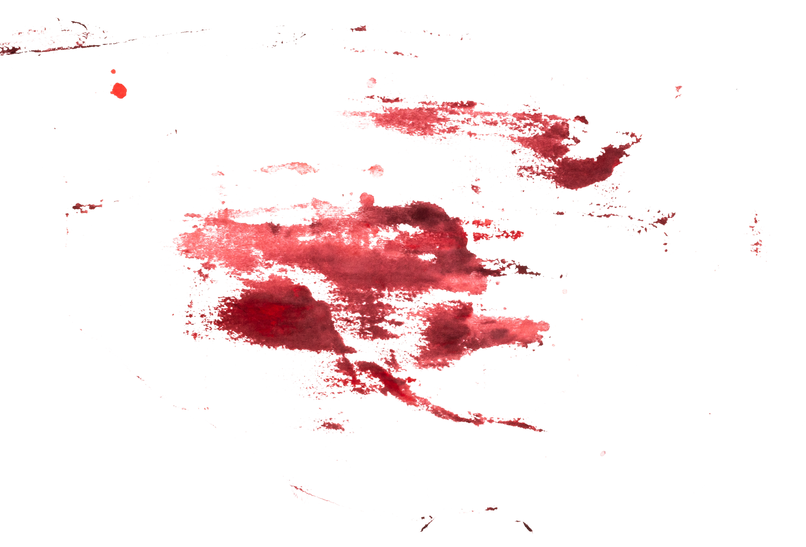

Story credits: donotdisturbpls. "CYOA- Daryl Needs a Kidney". Reddit, 2019, Link
Your little brother Daryl needs a kidney. Do you:
Give him one of yours.
Refuse, you are afraid of operations.
Your parents are furious, saying you’re selfish. But by evening they apologise and make your favourite dinner. You know they’re trying to persuade you. Do you:
Eat it.
Refuse.
You tell your parents you’ll do it, they’re thrilled! The night before the operation you start feeling jitters. Do you:
Go for a walk to calm down.
Go talk to Daryl.
By the time your parents are awake, you’re ready. The operation goes well, and the kidney is given to your brother. He looks at you, shame in his eyes, as he eats it. Blood runs down his chin. It’s hard having a cannibal as a brother.
Your parents get angry, and Dad swings at you. You’re knocked unconscious. You wake up strapped to an operating bed. Looks like your brother comes first, as always. After all, you were only conceived to give him body parts.
You eat the dinner, but begin to feel woozy before you’ve even finished. You wake up in an ice bath, with a fresh wound.
You’re out walking when you see a tramp. An idea forms. You’re not the only one with a kidney. Do you:
Convince him to come home with you.
Go home to talk to Daryl
Daryl apologises, saying he can’t help it but wishes you weren’t in this position. Do you:
Resign yourself, and create an ice bath
Tell your parents you’re too scared after all
Decide to kill Daryl instead. These demands never stop.
You swiftly draw the knife across his throat, and then head to bed. You wake in the morning to your parents screaming. Do you:
Admit it was you.
Pretend someone broke in.
The tramp comes home with you. Your parents are dubious at first, then thrilled as they come round to the idea. Daryl can feast for months with all these organs!
You sneak in and cut your parents throats while they sleep. There are plenty of kidney’s to go around now! You never understood why your brother needed human organs to survive, but hey, you may as well join him! You begin to tuck in and call Daryl in. He stops dead in the doorway. “Dude...in this one I actually needed as a transplant”.
Daryl looks at you in fear. You begin to feel qualms. Do you:
Go through with it and kill him.
Decide to kill your parents instead.
After the initial shock, your parents look almost relieved. You call the police and sob down the phone. Time to live a peaceful life, no more operations!
You can tell your parents don’t believe you, but they look almost relieved. Daryl isn’t the only one who likes fresh meat... it’s time for a family feast!
